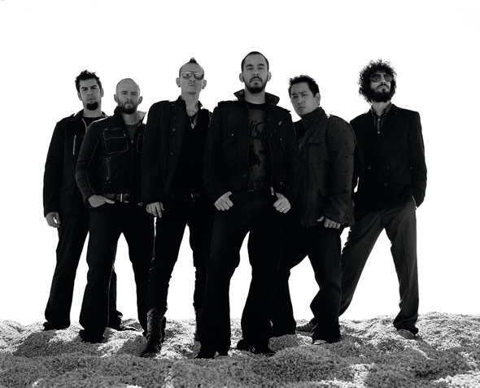

LINKIN PARK
La banda que mas discos a vendido en el sigo XXI.
Con una cantidad total desdel
el año 2000 que sobrepasa los 40 millones de discos vendidos en todo el mundo.

Road to revolution (Machine Shop Recordings/Warner Bros. Records) es un pack compuesto de CD + DVD donde se incluyen 18 canciones de Linkin Park grabadas en vivo.
Joseph Hahn se encuentra en produccion de su propio cortometraje llamado "The Seed".
Mike y Mark Wakefield dan soporte al candidato Barack Obama en las elecciones del 2008 grabando una cancion titulada Barack Your World.
Copyright @ 2009 All Rights Reserved. Please read the privacy-policy and Terms of Use